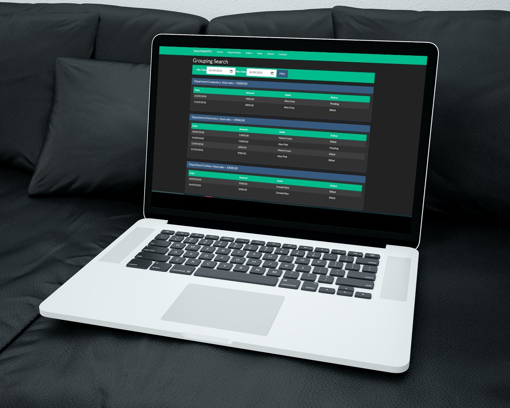

Site de Vendedores x Departamentos
Descrição do projeto
Esse foi o primeiro projeto que desenvolvi na linguagem C#. Apesar disso, foi mais um projeto que eu desenvolvi a partir dos conhecimentos passados pelo professor Nelio, na Udemy. O projeto consiste em um sistema para cadastro de departamentos, vendedores que se ligam com esses departamentos, e vendas que se ligam com esses vendedeores. Temos diferentes abas para cada um desses processos, e trabalhei intensamente com CRUD.
Eu já havia desenvolvido um projeto similar em JavaFX, mas essa foi minha primeira experiência com o .NET Core. Eu já tinha experiência em .NET Framework quando desenvolvi esse trabalho, e achei bem diferente e mais simplificado a atualização da Microsoft (Core).
No projeto temos algumas abas, onde as construídas para atender o sistema de fato foram Departamento, Vendedor e Venda. No cadastro do Vendedor podemos relacioná-lo a algum departamento previamente cadastrado, e assim conferir na lista de vendedores. Por fim, temos a tela de vendas, em que podemos pesquisar com uma simples pesquisa, mostrando os dados da venda em um período, ou uma pesquisa agrupada por departamento, mostrando as vendas por departamento no período selecionado pelo usuário.
Foi utilizado o Entity Framework, além do LINQ para auxiliar nos processos. Construímos exceções personalizadas para o projeto ficar mais profissional, além de outros detalhes como obrigatoriedade no cadastro dos campos. Eu gostei bastante de produzir o projeto porque trabalhar com C# tem sido uma boa experiência, e acredito que estou conseguindo me desenvolver bem. Sendo assim, acredito que este é o primeiro de alguns projetos que vou construir na linguagem.
Clique aqui para acessar este projeto no Github!
← Portfólio
← Home